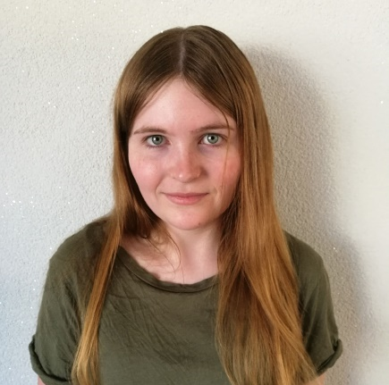

Agnieszka Sadowy
Mam 21 lat i mieszkam w Łodzi. Jestem studentką Information Technology na Politechnice Łódzkiej. Jestem zorganizowana, odpowiedzialna i otwarta na naukę nowych technologii.
Mam 21 lat i mieszkam w Łodzi. Jestem studentką Information Technology na Politechnice Łódzkiej. Jestem zorganizowana, odpowiedzialna i otwarta na naukę nowych technologii.
Projekt komercyjny stworzony w grupie podczas Smart Solution Semester w Holandii w ramach wyjazdu z Erasmus+. Jest to aplikacja webowa dla właścicieli sensorów. Wyświetla sensory użytkownika na mapie, pokazując informacje o nich oraz ich aktualne pomiary. Użytkownik może ustawić dla każdej mierzonej wartości próg, o którego przekroczeniu zostanie natychmiast poinformowany - w aplikacji oraz, jeśli sobie życzy, mailowo. Aplikacja została stworzona w kontakcie z policją, z myślą o umożliwieniu szybkiego wykrywania miejsc nielegalnego pozbywania się odpadków z produkcji narkotyków do wody. Moim zadaniem było tworzenie front-endu w ReactJS oraz projektowanie poszczególnych widoków w Figmie.
Projekt utworzony w grupie w ramach przedmiotu Mobile Systems na studiach. Jest to aplikacja mobilna napisana w React Native. Pozwala ona studentom i pracownikom Politechniki Łódzkiej na zakładanie i dołączanie do kół naukowych. Założyciel klubu może publikować posty, które są widoczne dla wszystkich członków. Kluby są pogrupowane po wydziałach oraz kategoriach, co ułatwia ich wyszukiwanie.
Projekt stworzony w grupie w ramach przedmiotu Cloud Computing na studiach. Jest to aplikacja w typie Twittera - użytkownicy mogą tworzyć, like-ować i komentować posty, followować się nawzajem oraz edytować swój profil. Jako cloud service wykorzystany został Firebase, a front-end jest napisany w ReactJS.
Projekt gry komputerowej rozpoczęty we współpracy z innym studentem. Moim zadaniem obecnie jest głównie tworzenie modeli low-poly w programie Blender, a w późniejszym stadium ich riggowanie i animacja. Projekt na bardzo wczesnym etapie developmentu, uczę się na bieżąco.